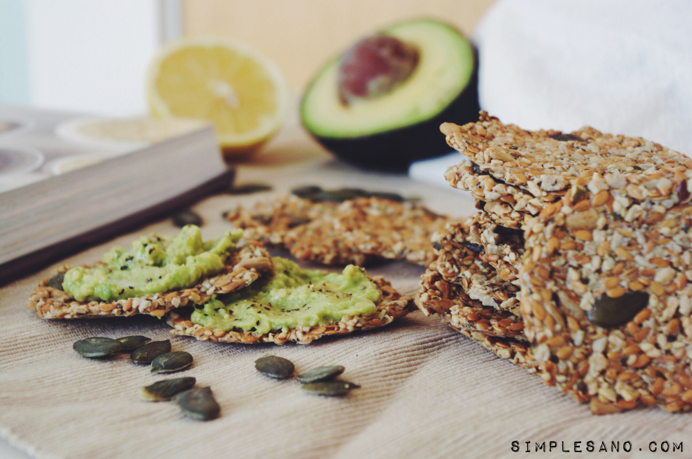

Avocrackers
Ingredientes:
- Crackers Natural Fit
- Palta
- Limón
- Sal
Preparación:
La preparación es muy simple:
- Pisá la palta con un tenedor, y condimentá con sal y limón a gusto.
- Extendé la mezcla en tus crackers Natural Fit
- ¡Listo! Tenés la compañía ideal para tu picada.
